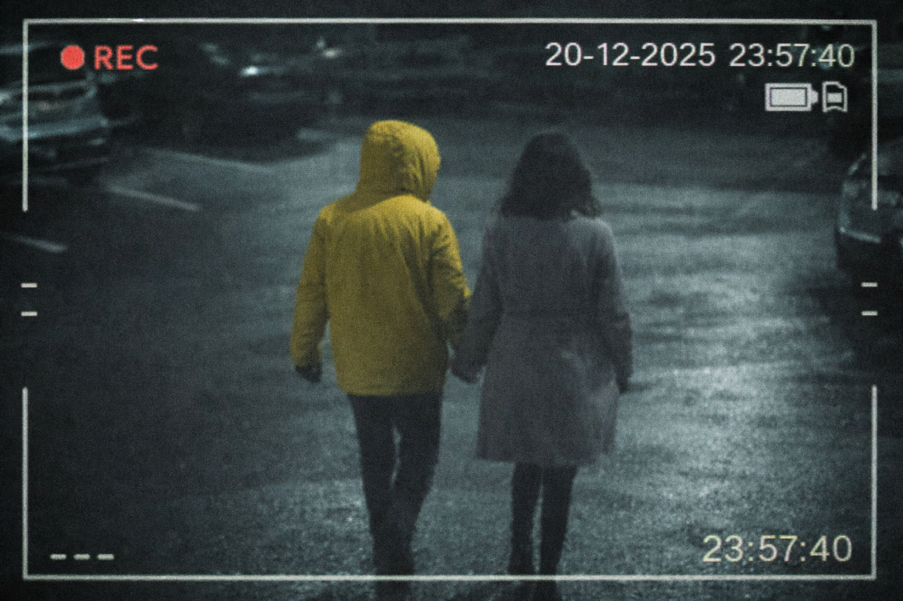

Sekcja Kontaktowa — Komenda Główna Policji, Warszawa
Data: 25 grudnia 2025
Opis: Kobieta która zagineła 20 grudnia, została znaleziona martwa w okolicach rzeki Wisły. Jeśli widziałeś ją w jej ostatnich dniach, prosimy o konkakt
Numer referencyjny: #SPN-52950-1
Data: 20 grudnia 2025
Opis: Zaginiona osoba, młoda kobieta w wieku 28 lat, ostatni raz widziana w okolicach ulicy Puławskiej. Ślad po niej zaginął po opuszczeniu lokalu o 23:30.
Numer referencyjny: #SPN-52950
Aktualizacja 27.12.2025: W toku czynności zabezpieczono monitoring z pobliskiego parkingu. Na nagraniu widoczna jest sylwetka osoby trzeciej w charakterystycznej żółtej kurtce. Prosimy świadków o kontakt jeśli rozpoznają tę osobę.

Data: 10 czerwca 2025
Opis: Zgłoszenia dotyczące wzrostu liczby przestępstw cyberprzestępczych. W ostatnich tygodniach otrzymaliśmy liczne zgłoszenia o kradzieży danych osobowych i atakach phishingowych. Wzywamy wszystkich obywateli do zachowania ostrożności w internecie i nieudostępniania swoich danych osobowych.
Numer referencyjny: #SPN-52951
Data: 5 czerwca 2025
Opis: Zgłoszenia od świadka, który twierdzi, że widział poszukiwanego Jana Kowalskiego w okolicach ulicy Sienkiewicza. Zgłoszenie to jest bardzo istotne w kontekście prowadzonego śledztwa.
Numer referencyjny: #SPN-52952
Data: 28 maja 2025
Opis: Po dokładniejszych analizach i przesłuchaniach, ustalono, że zaginięcie kobiety z dnia 15 maja 2023 może być powiązane z osobą związaną z jednym z podejrzanych w sprawach rabunkowych. Prosimy o wszelkie informacje.
Numer referencyjny: #SPN-52953